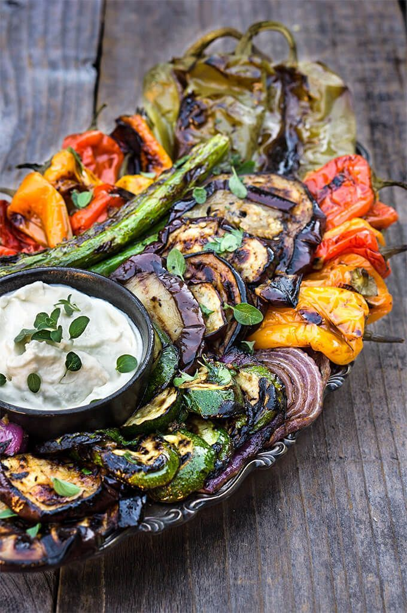
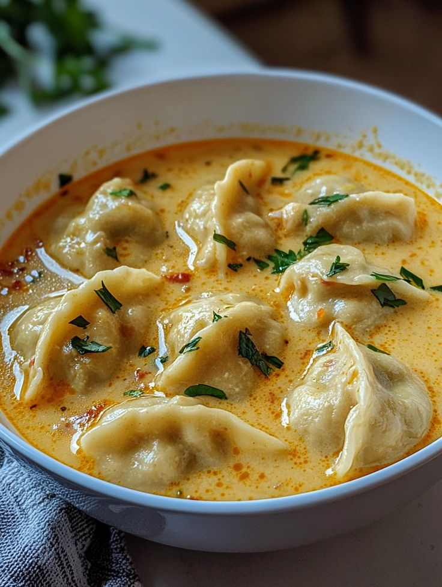
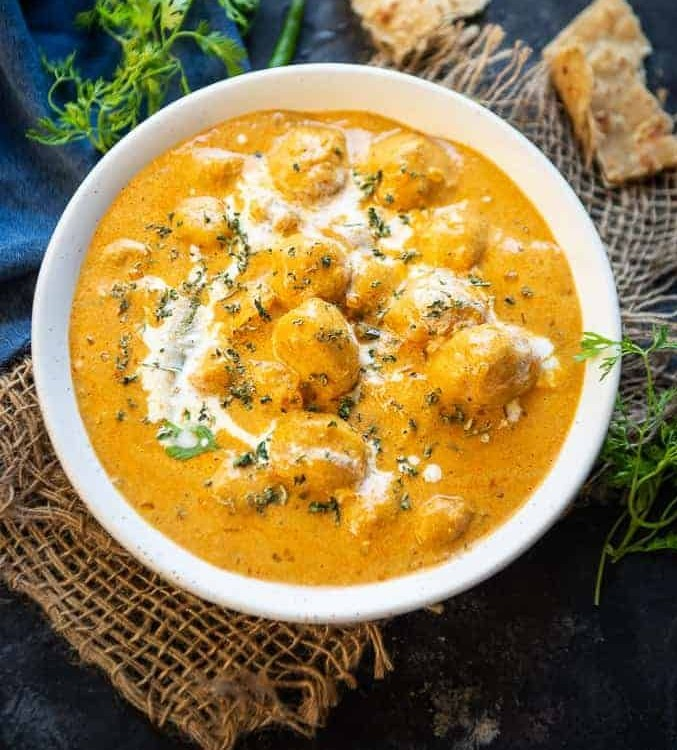
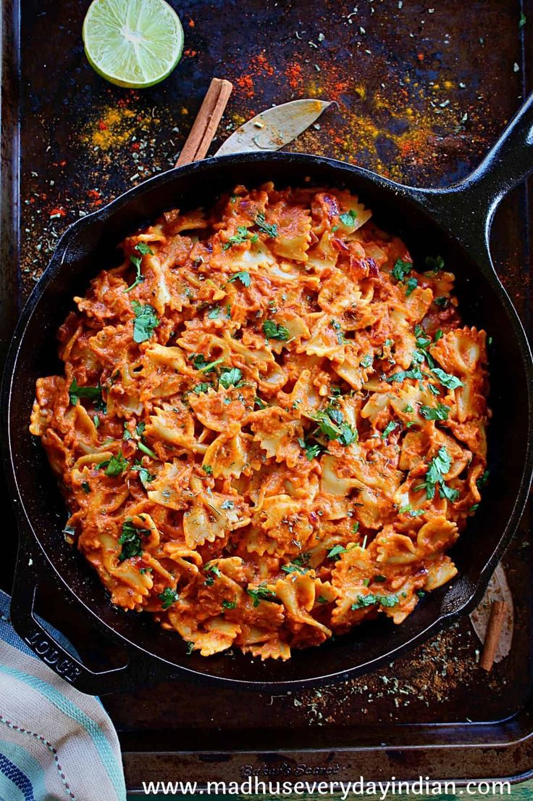
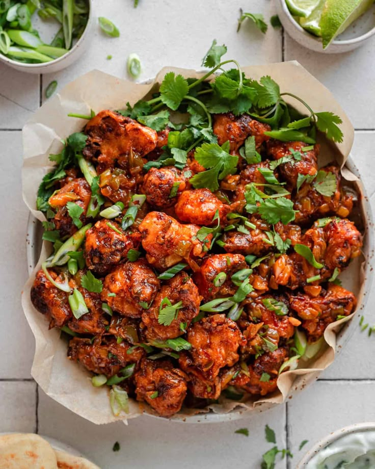
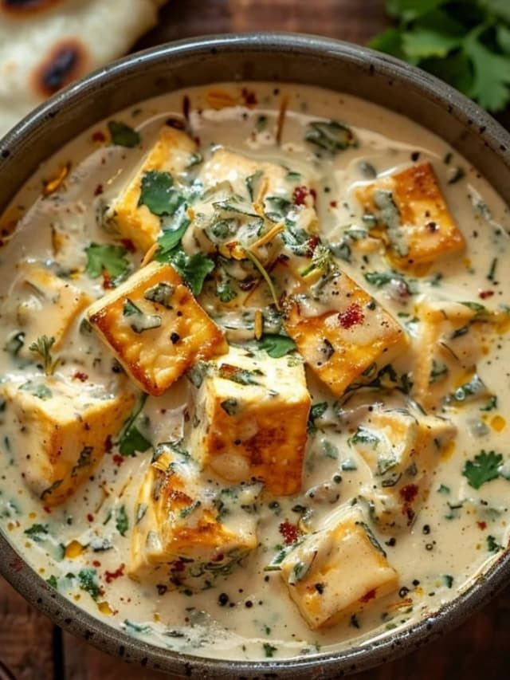

Marinated grilled vegetables
Marinated grilled vegetables with whipped goat cheese - eggplants, peppers, zucchini, asparagus, and onions, marinated and grilled till soft on the inside and charred on the outside, then doused in garlicky marinade, and served with whipped goat cheese on the side.

Coconut Curry Dumpling Soup
Pair frozen dumplings or pot stickers with a curry and coconut infused broth, plus a colorful mix of veggies, for a speedy, satisfying supper.

Dum Aloo
Dum Aloo is a delicious creamy gravy where fried potatoes are dunked in a rich onion tomato based curry. This shahi recipe is easy to make at home and use basic ingredients. Here is how to make it in restaurant or dhaba style.

Masala Tikka Pasta
Tikka Masala Pasta is a creamy tomato onion gravy coated with boiled pasta, making for one of the most delicious fusion Indian-Italian dishes.

Gobi Manchurian
Gobi Manchurian is an Indo-Chinese appetizer and this version will blow your mind! It features ridiculously crispy and crunchy fried cauliflower coated in a sweet, tangy, umami-rich chili sauce with lots of aromatics. A MUST-make for your next party or get-together!

nawabi paneer curry
Nawabi Paneer is a restaurant-style Indian paneer curry where paneer pieces are simmered in a rich and creamy white sauce. Serve this Mughlai-inspired dish with naan or lachha paratha